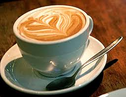

Receita em destaque
Cappuccino
O cappuccino é uma bebida clássica feita com expresso, leite vaporizado e espuma, conhecida pelo equilíbrio entre intensidade e cremosidade.

Origem
A história do cappuccino é associada à tradição italiana e ao café servido com leite e espuma. Com o tempo, a bebida ganhou variações em diferentes países e se tornou um dos itens mais populares das cafeterias.